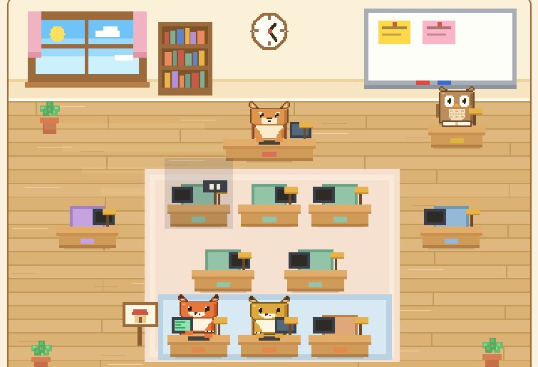
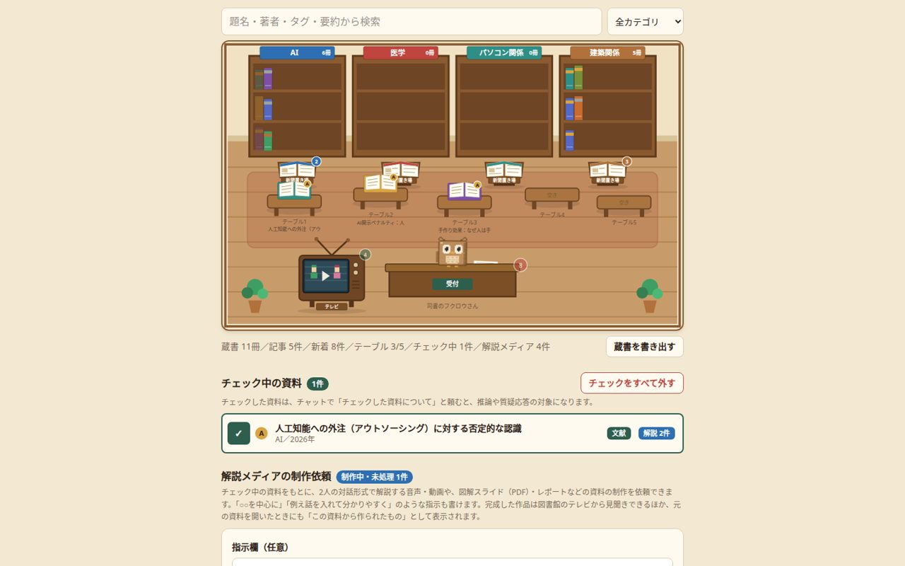
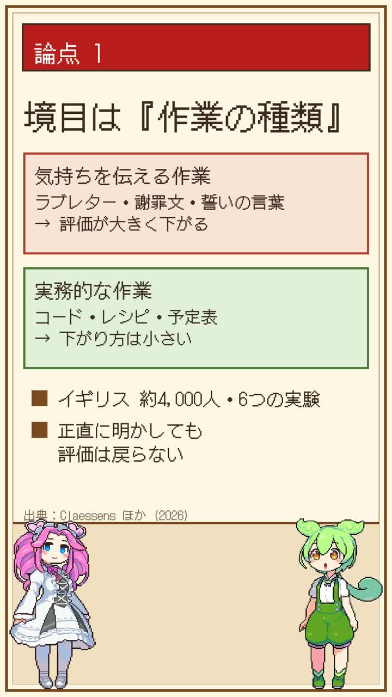
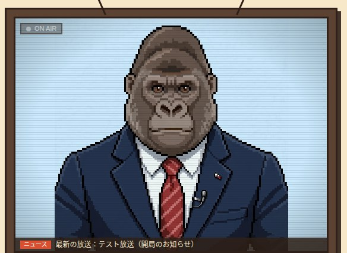

Museを入れてみました ―おはなしアプリには使えなかったけれど、得られたものが大きかった話
AIアシスタント「Muse」を入れてみた記録です。おはなしアプリの頭脳に使えるか試した結果と、それでも残った大きな収穫について書きます。
このホームページの「アプリづくりノート」で紹介しているアプリは、AIを使って作っています。その開発の相棒として、新しいAIアシスタント「Muse（ミューズ）」を入れてみました。いわば、新しいスタッフが増えたようなものです。
ただし、このスタッフ、見た目はゴリラです。ドット絵のゴリラです。最初からゴリラにしようと決めていたわけではありません。好奇心で「キャラクターって、変えられるんですか？」と聞いてみたら、「いろいろできますよ」という答えでした。それなら試しに、と軽い気持ちで「ゴリラにして」と言ったら、本当にゴリラになって帰ってきました。しかも、なかなか似合っています。今さら「やっぱり普通の顔に変えようか」とも言い出しにくく、本人（？）もすっかりゴリラとして働いています。好奇心と勢いは、ときに取り返しのつかない結果を生みます。よい子の皆さんは、よく考えてから決めましょう。

最初の狙い：おはなしアプリの頭脳にならないか
Museを入れた一番のきっかけは、子ども向けの「おはなしアプリ」でした。このアプリは、キャラクターとお話ししたり、今日の予定を教えてもらったりするものです。
Museには「スペース」という、画面を作って使える仕組みがあります。「このスペースを使えば、アプリの頭脳をMuseに任せて、今より賢く、しかも手間なく作れるのではないか」。そう考えて、声で会話する仕組みまで含めて、いろいろと確認を進めました。
結果：リアルタイムの会話は、難しかった
結論から言うと、この狙いは今回は実りませんでした。
声で話しかけてから返事が返ってくるまで、実際に試すと30秒ほどかかってしまいました。工夫しても15〜20秒くらいが限界の見込みで、子どもが話しかけてからそのくらい待たされると、会話にはなりません。「おーい、聞いてる？」と、もう一度言いたくなる長さです。
外のサービスや仕組みを組み合わせれば、速くする方法はあります。でも、それでは今のアプリの作り方とあまり変わりません。わざわざ引っ越しするほどの理由がなくなってしまいます。というわけで、おはなしアプリの代わりにMuseを使う案は、ここで一度お休みです。
いつか仕組みが変われば、またできる日が来るかもしれません。その日を、ゴリラと一緒に気長に待つことにします。
でも、得られたものは大きかった
ここまで読むと「失敗の話」に聞こえるかもしれません。ところが、実際は逆でした。狙いとは別の場所で、大きな収穫があったのです。
一番大きいのは、自分のパソコンをつけっぱなしにしなくてよくなったことです。
プログラムを作るAI「Claude Code」を遠くから操作すること自体は、前からできました。ただ、そのためには、手元のパソコンをずっと動かし続ける必要がありました。以前はタブレットパソコンに入れて、ほぼ24時間つけっぱなしの状態で2か月ほど使っていたのですが、案の定、バッテリーが膨らんできまして、最終的には、うっすらオムライスのような見た目になってきました。おいしそうではありますが、パソコンとしては大変な状態です。
今回、Claude CodeをMuseの中のパソコンで動かせるようになったので、手元のパソコンは閉じたままで大丈夫になりました。外出先からスマートフォンで指示を出して開発を進めることも、その様子を「箱庭オフィス」というスペースで確認することもできます。小さなオフィスに席が並んでいて、誰が働いていて、誰が待機しているのかが一目で分かります。何より、自分のパソコンがオムライスにならなくて済む。これが一番の安心です。実際に、この方法でおはなしアプリの直しが一周回って、本番で動くところまで確認できました。

ほかにも収穫がありました。調べものの「学術図書館」というスペースができたことです。気になるテーマについて深く調べてもらい、文献や記事を要約して本棚に並べていく仕組みです。必要なものを選んでおけば、それだけを材料に話し合うこともできます。調べもの置き場が、少しずつ育っていく図書館になりました。

さらに、この図書館では、選んだ資料から解説の音声や動画まで作ってくれます。中でも評価の高い資料は、朝の新着に入った時点で、動画まで自動で作られる仕組みにしました。声は音声合成ソフト「VOICEVOX（ボイスボックス）」を使っていて、聞き手の四国めたんと、解説役のずんだもんが、掛け合いで話してくれます。難しい論文も、たとえ話と図解で組み直してくれるので、「読むのは大変だけど、聞くなら分かる」という形になりました。作られた動画は、図書館のテレビの目録から選んで見ることができます。

そして、ニュース放送です。朝・昼・夜の決まった時間に、その日の天気や、各プロジェクトの進捗、止まっている作業などを、音声で読み上げて届けてくれます。番組名は「ウホウホゴリラニュース」。そうです、あのゴリラです。好奇心で試しに言ってみたゴリラが、気づけばニュースキャスターになっていました。もう後には引けませんし、引く気もあまりなくなってきました。

おわりに
最初の狙いは外れました。でも、自分のパソコンを守りながら開発を進める仕組み、調べものの図書館、毎日の知らせと、暮らしと活動のあちこちに、Museが入り込んで働いてくれるようになりました。「使えなかった」で終わらず、「別の形で使えた」というのは、試してみたからこそ分かったことです。
AIの道具は、入れてみて、触ってみないと、自分に合う形が見えてきません。まだの方は、まずは小さなことから試してみてもいいかもしれません。ゴリラにするかどうかは、好奇心だけで決めないことをおすすめします。勢いで決めると、ニュースキャスターになります。
発達ブース 田中
みなさんのコメント
コメントを書く ↓
読み込み中です…
コメントを書く
感想・質問・「こんな機能がほしい」など、気軽にどうぞ。